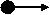
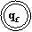
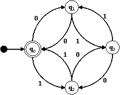
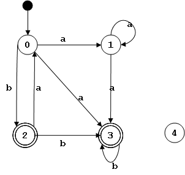

Los autómatas finitos tienen muchas aplicaciones. Aplicados a la traducción de lenguajes, ellos se emplean como medio sistemático y eficiente de reconocer los lexemas que concuerdan con las expresiones regulares asociadas a los componentes léxicos de un lenguaje. Los autómatas finitos son una manera eficiente de implementar un analizador léxico.
Podemos ver un autómata finito como una máquina de estados con un lector de símbolos. Un autómata se encuentre en un principio en un estado inicial. El autómata lee cada símbolo en la secuencia entrada, y cambia de estado de acuerdo al símbolo. El autómata se detiene si llega a un estado final y la entrada está agotada. Si la secuencia de entrada se agota y el estado no es final el autómata produce un error. También se produce un error si no hay una transición de estados definida para el estado actual y el símbolo leído.
Secuencias Reconocidas/Aceptadas por un AF
Un autómata finito reconoce/acepta una secuencia de entrada si luego de leída toda la secuencia el autómata se encuentra en un estado final.
Diagramas de Estado
Un autómata finito puede representarse y visualizarse mediante un diagrama de estados. Un diagrama de estado es un grafo dirigido donde cada vértice representa un estado, y cada arista está etiquetada con un símbolo del alfabeto de entrada y representa la transición entre estados que se produce cuando ese símbolo es el siguiente leído.
Estado Inicial
El estado inicial se denota llamándolo q0 o usando el símbolo:

Estados Finales
Los estados finales se denotan usando un doble círculo:

Ejemplos
El siguiente diagrama de estados representa a un autómata finito que reconoce todas las secuencias con un número par de ceros y unos:

Este es un ejemplo de un autómata finito no-determinista que acepta el mismo lenguaje que la expresión regular (ba)*(a+|b)b*:

Lenguaje Definido por un A.F.
Un autómata finito M define un lenguaje L(M) el cual es el conjunto de todas las secuencias reconocidas/aceptadas por dicho autómata.
Se puede demostrar que los lenguajes definidos por los autómatas finitos son exactamente los lenguajes regulares. Es decir, todo lenguaje regular es reconocido por algún autómata finito, y todo lenguaje aceptado por un autómata finito es un lenguaje regular.
Como veremos más adelante, los autómatas finitos se clasifican en deterministas y no- deterministas. Los lenguajes definidos por ambos tipos de autómatas son los mismos. Es más, para cada autómata finito no-determinista existe por lo menos un autómata finito determinista que acepta el mismo lenguaje.
Autómata Finito No-Determinista
Un autómata finito no-determinista (AFN) es una tupla:
M = (Q, S, δ, q0, F)
donde:
- Q es un conjunto finito de estados {q0...qn}
- Σ es un alfabeto de símbolos de entrada
- δ es una función de transición δ : Q x (Σ ∪ ε) → ℘(Q) que dado un estado y un símbolo de entrada o la cadena vacía regresa un subconjunto de Q.
- q0 ∈ Q es el estado inicial.
- F ⊆ Q es un conjunto de estados finales.
Un autómata finito no-determinista puede "estar en más de un estado" a la vez.
Nótese que para los autómatas finitos permitimos transiciones δ(q, ε) que no consumen símbolos de la entrada.
Autómata Finito Determinista
Un autómata finito M=(Q, Σ, δ, q0, F) es determinista (AFD) si:
- |δ(q,a)| ≤ 1 ∀ q ∈ Q ∧ a ∈ Σ*
- δ(q,ε) = ∅ ∀ q ∈ Q
es decir, cada transición lleva a lo sumo un único estado.
Si |δ(q,a)| = 1 ∀ a ∈ Σ decimos que el AFD está completamente especificado.
Por definición todo AFD es un AFN.
Configuraión
Una configuración de un AFD es un par (q, w) donde q ∈ Q y w ∈ Σ*.
Decimos que (q0, w) es una configuración inicial.
Decimos que (qf, ε) es una configuración final, si qf ∈ F.
Escribimos una transición entre dos configuraciones de la siguiente manera:
(qi, aw)├─ (qj, w)
también podemos escribir:
(qi, xw)├─* (qj, w)
para indicar que ocurrió más de una transición.
Estados Inaccesibles
| Falta definición |
Equivalencia entre AFNs y AFDs
Dado un autómata finito no-determinista M=(Q, Σ, δ, q0, F) podemos encontrar un autómata finito determinista M'=(Q', Σ, δ', q0', F') que acepta el mismo lenguaje.
Primero ampliamos la función δ para que acepte conjuntos de estados como primer parámetro:
Δ : ℘(Q) x (Σ ∪ ε) → ℘(Q)
Δ(E, x) = { δ(q,x) | q ∈ E ∧ x ∈ (Σ ∪ ε }
Clausura
La clausura de un estado κ(q) se define como todos los estados que pueden ser alcanzados desde q por transiciones ε, incluido el mismo q. Por extensión, definimos la clausura sobre un conjunto de estados así:
κ(E) = ∪i κ(qi) ∀ qi ∈ E
Algoritmos
Podemos calcular la clausura de cada estado q ∈ Q iterativamente, de la siguiente manera:
- K(q) = { q } ∀ q ∈ Q
- repeat
K' = K
foreach q ∈ Q
K(q) = K'(q) ∪ Δ(K'(q), ε)
end
until K = K'- κ = K
Calculamos el juego de estados Q' del nuevo AFD iterativamente, usando el siguiente algoritmo:
- Q' = κ(q0)
- repeat
Q'' = Q'
Q' = Q'' ∪ { κ(Δ(E, a)) | E ∈ Q'' ∧ a ∈ Σ }
until Q'= Q''
Luego definimos:
- q0' = κ(q0)
- F'= { E ∈ Q' | E ∩ F ≠ ∅ }
- δ'(E,a) = Δ(E, a) ∀ E ∈ Q' ∧ a ∈ Σ
| Falta ejemplo! |
Expresiones Regulares y Autómatas Finitos
Método de Thompson
La clase de lenguajes aceptados por los autómatas finitos\ es exactamente la de los lenguajes regulares\. Es decir, para cada Automata Finito M existe una Expresion Regular que define L(M), y para cada Expresion Regular r existe un Automata Finito N tal que L(r) es el lenguaje aceptado por el autómata.
El Método de Thompson es una manera sistemática de construir un Automata Finito M que acepta el mismo lenguaje que una Expresion Regular dada.
Para una expresión regular s Hacemos la transformación N(s) sobre un árbol de sintaxis abstracta de la expresión recorriendo los nodos en orden de profundidad primero (depth first).
Para un símbolo a ∈ Σ hacemos:
Para un nodo | con subárboles s y t hacemos:
Para un nodo ⋅ con subárboles s y t hacemos:
Para un nodo * con subárbol s hacemos:


Ejemplo
Para la expresión regular:
((ε|a)b*)*
Construimos el siguiente árbol de sintaxis abstracta:

Para los nodos ε, a, y b, construimos los siguientes autómatas:


Para el nodo | construimos el siguiente autómata:

Para el nodo * hacemos:

Para el nodo ⋅ hacemos:

Finalmente, para el * en el nodo raíz hacemos:

Expresiones Regulares a Partir de Autómatas

- Agregar un nuevo estado inicial con una transición etiquetada con ε al estado inicial anterior.

- Agregar un nuevo estado final, y transiciones etiquetadas con ε desde los estados finales anteriores al nuevo estado final.

- Para cada estado, si no hay una transición del estado a si mismo, asumimos que hay una etiquetada con ε.
- Si hay dos transiciones etiquetadas R1 y R2 entre los estados qa y qb se sustituyen por una única transición etiquetada (R1|R2).
- Se eliminan los estados q que no sean el estado inicial ni pertenezcan a los estados finales de la siguiente manera: ## Para casa estado q, y para cada para de estados qa,y qb tal que existan transiciones qa→q etiquetada con R1, q?q etiquetada con R2, q?qb etiquetada con R3, y qa→qb etiquetada con R4, agregamos una transición qa→qb etiquetada con ((R1R2*R3)|R4) si existe R4, y (R1R2*R3) si no.
- Eliminamos las transiciones originales.
- Eliminamos q.

- La expresión regular resultante es la etiqueta de la transición q0?qf luego de haber eliminado el resto de los estados.
El lenguaje descrito por la Expresion Regular resultante es el mismo que el lenguaje reconocido por el AFN original.
Ejercicios


Minimzación de AFD
El Problema de Minimización
- Puede haber más de un AFD que acepte el mismo lenguaje.
- Entre esos AFD equivalentes, es a menudo útil encontrar el más pequeño, es decir, el AFD con el menor número de estados.
- Esto es especialmente importante cuando se usan AFDs para diseñar circuitos digitales, o para crear analizadores léxicos.
Estados No Alcanzables
- A veces un DFA contiene estados que no pueden ser alcanzados desde el estado inicial.
- Esos estados son fáciles de identificar y pueden ser eliminados sin cambiar el lenguaje aceptado por el DFA.
- El estado 5 no es alcanzable y puede ser eliminado sin alterar el lenguaje aceptado por el DFA.
Estados Equivalentes o Indistinguibles
- Dos estados son equivalentes si el unirlos en uno no altera el lenguaje aceptado por el DFA.
- Unir estados equivalentes es otra forma de simplificar un DFA sin alterar el lenguaje que acepta.
- Dos estados q y r de un autómata M son indistinguibles (escrito q ≡ r) si el autómata que se obtiene de M al hacer q el estado inicial es equivalente al obtenido haciendo r el estado inicial.
- La relación ≡ es una equivalencia (reflexiva, simétrica, y transitiva) y divide el conjunto de estados de un autómata en clases de equivalencia.
- Cada clase de equivalencia corresponde a un estado en el AFD mínimo.
Detectando la Equivalencia
- Para cualquier par de estados q y r, decimos que q ≡n r significa que esos estados no son distinguibles por ninguna cadena de longitud menor o igual a n.
- Dos estados q y r son n-distinguibles si con una cadena de longitud menor o igual a n se llega a un estado final partiendo de q, pero no de partiendo de r, o viceversa.
- Podemos relacionar ≡n con ≡n-1 como sigue: para cualquier par de estados q y r, y un entero n > 0, q ≡n r si y solo si:
- q ≡n-1 r, y
- ∀ a ∈ Σ, δ(q,a) ≡n-1 δ(r,a)
Algoritmo de Minimización
- Eliminar todos los estados no alcanzables.
- Las clases de equivalencias ≡0 son F (el conjunto de estados finales) y Q-F (los estados no finales).
- Calcular las clases de equivalencia ≡n a partir de las de ≡n-1
- Repetir 3 hasta que ≡n sea idéntico a ≡n-1.
- Cada clase de equivalencia resultante corresponde un estado del AFD mínimo.
- Los estados finales en el AFD mínimo son las clases que contengan estados finales del AFD original.
- El estado inicial el AFD mínimo es la clase de equivalencia que contenga al estado inicial del AFD original.
- La tabla de transiciones del AFD mínimo se calcula a partir de la tabla original.
- Para cada entrada δ(qi,a) = qj en la tabla original, se coloca una entrada δ'(C(qi),a) = C(qj) en la tabla del AFD mínimo, donde C(q) es la clase de equivalencia del estado q.
Ejemplos
Ejemplo del libro

Tabla de transiciones δ
| a | b | |
|---|---|---|
| A | B | C |
| B | B | D |
| C | B | C |
| D | B | E |
| E | B | C |
Búsqueda de estados equivalentes:
| ≡0 | ≡1 | ≡2 | ≡3 | ≡ | q' |
|---|---|---|---|---|---|
| E | E | E | E | E | E |
| A B C D |
A B C |
A C |
A C |
A C |
A |
| B | B | B | B | ||
| D | D | D | C | B |
Nueva tabla de transiciones:
| a | b | |
|---|---|---|
| A | B | A |
| B | B | D |
| D | B | E |
| E | B | A |

Lema de Bombeo
No todos los Lenguajes son Regulares
Un autómata finito que aceptara el lenguaje L={akbk | k ≥ 0} tendría que contar el número de 'a' en cada cadena para asegurarse de que el número de 'b' es el mismo. No hay límite a cuanto el autómata tendría que contar para aceptar una cadena de este lenguaje. Pero un autómata con memoria finita solo puede contar en proporción al tamaño de su memoria: el número de sus estados.
Ese es un argumento intuitivo de por qué este lenguaje no es regular, pero no es una prueba. Para probar que un lenguaje no es regular usamos un resultado llamado el lema de bombeo para lenguajes regulares.
El Lema de Bombeo
Sea L un lenguaje regular. Existe un entero n tal que para cualquier w ∈ L con |w| ≥ n (la longitud de w es mayor o igual a n), w puede ser escrita como xyz, cumpliendo con las siguientes condiciones:
- |xy| ≤ n
- |y| ≥ 1
- xyiz ∈ L ∀ i ≥ 1
Comprobación Intuitiva
Todo lenguaje regular es aceptado por un autómata finito determinista. Si dicho autómata posee n estados, entonces cualquier paso de longitud n debe visitar por lo menos n+1 estados, y por lo tanto contiene un ciclo.
En Resumen
- Si un lenguaje infinito es regular, es, por ser regular, aceptado por un AFD.
- El DFA tiene un número finito de estados, digamos, n.
- Ya que el lenguaje es infinito, algunas cadenas en el mismo deben tener longitud mayor que n.
- Para que una cadena de longitud mayor que n sea aceptada por el AFD, el camino a través de los estados del autómata debe contener un ciclo.
- Repetir el ciclo un número arbitrario de veces debe producir otra cadena aceptada por el AFD.
Cómo usar el Lema de Bombeo
El Lema de Bombeo describe una propiedad de todos los lenguajes regulares infinitos. Si podemos mostrar que un lenguaje no posee esta propiedad, sabemos entonces que el lenguaje no es regular.
La estrategia a usar es la prueba por contradicción (reducción al absurdo). Asumimos que el lenguaje en cuestión posee la propiedad descrita por el Lema de Bombeo, y luego mostramos que eso produce una contradicción. Dada la contradicción, se concluye que el lenguaje no es regular.
Ejemplos de Lenguajes No Regulares
L={akbk | k ≥ 0}
Suponemos que existe n. Tomamos la cadena anbn que pertenece al lenguaje. La parte a repetir, y, tiene que consistir en una o más a. Repitiendo a's, (yi) no obtenemos nuevas cadenas pertenecientes al lenguaje, por lo tanto el lenguaje no es regular.
- L={wwR | w ∈ Σ*} donde wR significa el reverso de a cadena w.
- L={w ∈ {a,b}* | w contiene el mismo número de a y b}
- L={ww | w ∈ Σ*}
Construcción de Gramáticas Regulares a partir de AFD
Existe un algoritmo que permite obtener una gramática regular que genera un lenguaje regular dado a partir del autómata finito que reconoce ese lenguaje. Los pasos a seguir son los siguientes:
- Asociar al estado inicial el símbolo distinguido S.
- Asociar a cada estado del autómata (menos el estado inicial) un símbolo no terminal.
- Para cada transición definida δ(qi, a) = qj, agregar al conjunto de producciones la producción A → aB, donde A y B los símbolos no-terminales asociados a qi y qj respectivamente. Si qj es un estado final, agregar también la producción A → ε.
Ejemplo:
L = { x | x ∈ {0, 1}* ∧ x contiene la subcadena 00 ∨ x contiene la subcadena 11}
El lenguaje es reconocido por le siguiente autómata finito:

Como al estado inicial no entran arcos, se asocia únicamente el símbolo distinguido S.
Primero asignamos un símbolo no-terminal a cada estado, comenzando por el estado inicial:
| p0 | S |
| p1 | A |
| p2 | B |
| p3 | C |
La gramática correspondiente a este lenguaje es:
G = ({S, A, B, C}, {0, 1}, P, S), siendo P el siguiente conjunto:
S → 0A ya que δ(p0, 0) = p1* y S y A están asociados a p0 y p1 respectivamente.
S → 1B ya que δ(p0, 1) = p2* y S y B están asociados a p0 y p2 respectivamente.
A → 0C
A → 0
A → 1B
B → 0A
B → 1C
B → 1
C → 0C
C → 0
C → 1C
C → 1
{kind=link}
{kind=link}
{kind=link}
{kind=link}